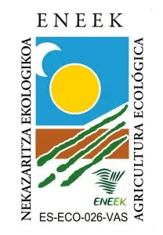
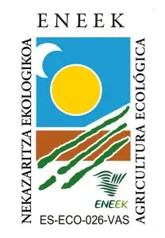

Sal D'Oro
Desde la pequeña localidad de Salinas de Oro, en Tierra Estella (Navarra), llega una de las pocas sales de manantial que aún se produce de forma artesanal en Europa. Las salinas de esta zona, documentadas desde 1492 y seguramente anteriores, aprovechan un manantial salino único y un proceso ancestral que ha pasado de generación en generación.
El agua se extrae directamente del manantial y se vierte en pequeñas eras donde, gracias al sol y al viento, se evapora lentamente. La sal se recoge a mano, sin maquinaria ni aditivos, conservando intactas sus cualidades naturales.
El resultado es una sal pura, con cristales de estructura cúbica y textura delicada. Su sabor, equilibrado y limpio, realza los alimentos sin enmascararlos, lo que la convierte en un ingrediente ideal tanto para el uso diario como para la cocina más exigente.
La sal se distribuye bajo el nombre Sal-Oro, directamente desde su origen, respetando la tradición y el saber hacer de quienes llevan generaciones cuidando este proceso único.
 


Catálogo de Productos

Sal Tradicional BIO
Caja de 400gr